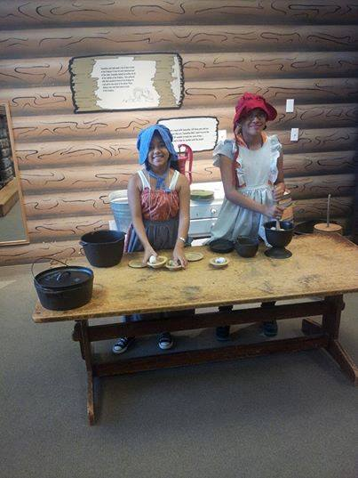
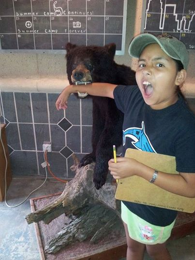
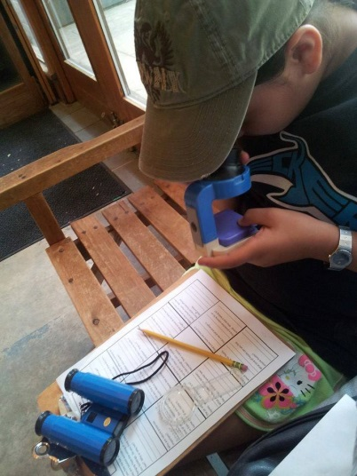

Advocacy Outreach
200 Depot Street,
P. O. Box 169, Elgin,
Texas 78621
Phone 512 281-4180
FAX 512 281-9599
ADVOCACY OUTREACH SUMMER CAMP 2014
WHERE DO WE COME FROM? WHAT ARE WE? WHERE ARE WE GOING?
The painting, made by impressionist painter, Paul Gauguin, in Tahiti in 1975, asks the three existential questions of the painting’s title in its top left corner.
Advocacy Outreach opened its four-week Family Literacy Summer Camp on June 10, 2014, with a slide of the painting projected on the wall of the gym at the Excel Manor ISD campus that hosted our program. Eleven parents and thirty-five children, ages 3 to 16, looked at the painting and speculated on its meaning.Those questions formed the theme of the summer program and subsequent activities and outings were conducted to examine the questions and develop answers that related to the personal experiences of each participant.
We opened the program with a Paul Gauguin painting and closed it, on July 3, with a group of Paul Gauguin’s lithographs on display at the Blanton Museum in the exhibition titled, “In the Company of Cats and Dogs.”
Parents and children attended sessions on the Excel campus site Tuesdays and Wednesdays. Parents were English language learners in two groups, Beginners and Advanced.
Children were divided into four groups—Early Childhood; K through 2nd grade; 3rd through 5th grade; and Middle/High School. On Thursdays we went on outings, family-style, to learn about our history, ourselves and our future.
The child participants were children of parents learning English or homeless children referred by the Homeless Liaison at Elgin ISD. The parents of homeless children did not attend English language classes but they were encouraged to attend Thursday field trips. Attendance at sessions averaged above 90%.
WHERE DO WE COME FROM?
To help children define their own family structures and learn about their own ancestors, we developed a letter writing campaign. On Tuesdays, children wrote letters to their parents, made envelopes, stamped and delivered them to the Adult Education classrooms, or took them home to parents.Parents responded and delivered answers, by letter, to their children on Wednesdays. We were unprepared for the enthusiasm this activity generated. It was a novelty.
We knew, through experience with adult ESL classes, that many parents from countries outside the U.S. did not know how to address and compose a letter. But we were surprised to find how unfamiliar the letter format was to school children.
In this age of electronic communication, many (most) of the children had no experience writing or receiving a letter through the post. At first it seemed archaic to them; they were intrigued. They loved the formal give-and-take.
Before the end of the program some of the older children and parents confessed that they were able to tell each other things in writing that they had not expressed verbally to each other.
Specifically, they were referring to letters that moved to the third question:
WHERE ARE WE GOING?
Parents were describing life and career goals that they had had for themselves and dreams they have for their children. Children were telling parents what they hoped to be when they grow up.
Participants learned the 5 parts of a letter; developed vocabulary; learned to proofread; learned to calculate postage by weight. And children discovered who their lineal and lateral relatives were. Children created “family trees.” Parents in ESL classes learned the vocabulary to describe familial relationships.

WHAT ARE WE?
The field trips that we took provided insight into our environmental and cultural history. We visited the Mayborn Natural Science and Cultural History Museum Complex at Baylor University in Waco where an interactive dinosaur exhibit held the attention of the children.Walk-in dioramas and exploration stations for geology, paleontology, archaeology and anthropology illustrated life of the animals and humans that have populated Texas through the eons. A Science Discovery Hall allowed participants to go inside a room-sized model of the human body and to learn how our bodies process sight and sound.
A trip to the Austin Nature Center allowed us to examine our role as stewards of the environment as we saw native species of birds, animals and reptiles that have been damaged by their contact with the modern world of man. A visit to the Blanton Museum of Art on the University of Texas campus allowed us to see ourselves through the eyes of artists from the classical age to the present.Children and their parents found an exhibit of “1968” at the Bob Bullock Texas History Museum to be humorous and intriguing. Instructors built on material from the field trips to encourage dialogue in classrooms about our origins, our place in the world and our definitions of self.

WHERE ARE WE GOING?
A consistent goal of our programming is to encourage transitions to higher education and satisfactory careers. In addition to using the letter-writing activity to explore educational and career goals, field trips were planned to expose participants to college campuses.At University of Texas we took a walking tour of the campus. A young man of 16, looking at the neoclassical architecture of the huge halls and watching the young college students bustling about, remarked that he was making a resolution to bring his grades up during his junior and senior years so that he could have the chance to get into UT.
A finishing touch to the visit to the Bob Bullock museum was a visit to the third floor exhibit of photographs from the McDonald Observatory of space—planets, galaxies and black holes. Where are we going? For these young people, despite the adversities of poverty and disruption of home—the sky is the limit.
